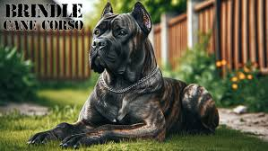

Cane Corso
Smart, trainable, and of noble bearing, the assertive and confident Cane Corso is a peerless protector.
The Corso's lineage goes back to ancient Roman times, and the breed's name roughly translates from the Latin as 'bodyguard dog.'
At nearly 28 inches at the shoulder and often weighing more than 100 pounds, with a large head, alert expression, and muscles rippling beneath their short, stiff coat, Corsi are at a glance intimidating creatures.
Their imposing appearance is their first line of defense against intruders.
As one writer put it,
An understated air of cool competence, the kind of demeanor you'd expect from a professional bodyguard, is the breed's trademark.
Corsi are intelligent, loyal, eager to please, versatile, and intensely loyal to their humans, but are also assertive and willful, and can end up owning an unwitting owner.
As with any other big guardian dog, responsible breeding and early socialization with people and other dogs is vital.
Pronunciation - Connie Corso